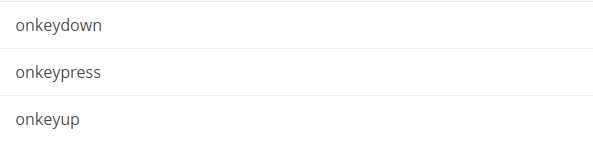

JavaScript DOM Kullanımı
HTML DOM ile, javaScript kullanarak bir HTML belgesinin tüm elementlerine ulaşıp, değiştirebilirsiniz. DOM; HTML, SVG, XML gibi yapısal diller için bir arayüz görevi görmektedir. Dom ile bir ağaç gibi belgeye ulaşıp, belgenin yapısını ve stilini değiştirmek mümkündür.
HTML DOM(Document Object Model)
Tarayıcı bir Web sayfasını yüklendiğinde DOM nesnesini de oluşturur. Yüklenen DOM, belge için bir dizi düğüm ve nesne sunmaktadır. Düğümler ile ayrıca olaylar ve tetikleyiciler eklenebilir. Özetle programlama dilini WEB sayfasına bağlamak için kullanılır..
DOM modeli nesneleri aşağıdaki gibi ağaç yapısında oluşturmaktadır.
JavaScript, Nesne Modelini kullanarak HTML belgesini düzenlemek için gerekli tüm yetkilere sahiptir. Aşağıdaki gibi belge üzerinde tüm işlemleri gerçekleştirebiliriz.
HTML DOM Nedir?
Yukarıda belirtildiği gibi HTML DOM standart bir nesne ve programlama ara yüzüdür.Nesne olarak HTML etiketi şunlara sahiptir.
- HTML etiketleri birer nesnedir.
- HTML etiketlerinin özellikleri
- HTML etiketlerine erişim metodları
- Tüm HTML etiketlerinin olayları
HTML DOM metodları ile elementler üzerinde işlem yapabilirsiniz.
HTML DOM özellikleri ile elementlerin değerlerini okuyabilir ve değiştirebilirsiniz.
DOM Programlama Arayüzü
- JavaScript ile Tüm HTML DOM ağacına ulaşabilirsiniz.
- DOM içinde tüm HTML etiketleri birer nesne (object) olarak oluşturulmuştur.
- Programlama arayüzü her etiket için metot(method) ve özellikler(property) sunar.
- Özellik(Property) etiket değeri üzerinde okuma ve değiştirme yapma imkanı sunar.(İçeriği değiştirme gibi)
- Methot (Method) etiket üzerinde eylemler gerçekleştirme imkanı sunar.(Yeni etiketler ekleme gibi)
getElementById Metodu
Bir HTML etiketine erişmek için kullanılan en sık yöntemlerden biridir. Etiketin id niteliğini kullanır.
innerHTML Özelliği
Bir HTML etiketinin içeriğini öğrenmenin en kolay yoludur. innerHTML ile etiketin içeriğini almak yada değiştirmek mümkündür.
HTML DOM document Nesnesi
document nesnesi web sayfasını temsil eder.
Sayfa içindeki her hangi bir elemente ulaşmak için document nesnesi ile başlamak zorundasınız. HTML etiketleri üzerinde düzenleme yapmak için kullanılan bazı document metotları aşağıda gösterilmiştir.
HTML Etiketlerini Seçme
- document.getElementById(id): id niteliği ile eşleşen ilk kaydı getirir.
- document.getElementsByName(name): name niteliği ile eşleşen tüm kayıtları dizi olarak getirir.
- document.getElementsByTagName(etiketadı):etiket adı ile eşleşen tüm kayıtları dizi olarak getirir.
- document.getElementsByClassName(classAdı):class niteliği ile eşleşen tüm kayıtları dizi olarak getirir.
- document.querySelector(seçici): seçici ile eşleşen ilk kaydı getirir.
- document.querySelectorAll(seçici): seçici ile eşleşen tüm kayıtları dizi olarak getir.
Aşağıdaki document özellikleri ile de HTML nesnelerine liste olarak erişebilirsiniz. HTML belgesindeki nesneleri dizi listesi olarak çeker.
Not: body, head, documentElement, title tek bir nesneyi döndürür. Diğerleri nesnelerden oluşan bir dizi döndürür.
- document.anchors ⇨ Sayfadaki tüm bağlantıları erişmek için kullanılır.
- document.body ⇨Body nesnesine ulaşmak için kullanılır
- document.documentElement ⇨HTML kökünden itibaren tüm dökümana ulaşmak için kullanılır.
- document.embeds ⇨ eklentilere ulaşmak için kullanılır.
- document.forms ⇨ Sayfadaki formlara ulaşmak için kullanılır.
- document.head ⇨ head etiketine ulaşmak için kullanılır.
- document.images ⇨Sayfadaki resimlere ulaşmak için
- document.links ⇨ Sayfadaki linklere ulaşmak için kullanılır.(a href olan nesneler)
- document.scripts ⇨ Sayfada yüklenen Script dosyalarına ulaşmak için kullanılır.
- document.title ⇨ Sayfa başlığına ulaşmak için kullanılır.
Örnek: document.getElementById kullanımı
Örnek: document.getElementsByName kullanımı
HTML Etiketlerini Düzenleme
- etiket.innerHTML: Etiketin içini okuma ve değiştirme için kullanılır.
- etiket.attribute: Etiketin niteliğini değiştirmek için kullanılır.
- etiket.setAttribute(nitelik, değeri): Etiketin niteliğini değiştirmek için kullanılır.
- etiket.style.property: Etiketin stilini değiştirmek için kullanılır.
- etiket.classList: etiketlerin class niteliği üzerinde silme,değiştirme, ekleme, class listesini öğrenme gibi işlemleri yapmak için kullanılır.
Örnek: etiket.innerHTML kullanımı
HTML Etiketi Ekleme ve Silme
- document.createElement(element) :HTML etiketi oluşturma
- document.removeChild(element): HTML etiketi silme
- document.appendChild(element): HTML etiketi ekleme
- document.replaceChild(element): HTML etiketini değiştirme
Örnek:select içine yeni bir option ekleme
- createElement ile nesneyi oluşturduk.
- setAttribute ile value niteliğine yeni sayı girişi yapılır.
- innerHTML ile de oluşturulan etiket içine “Beşiktaş” değerini atıyoruz.
- appendChild ile select içine oluşturulan option değerini ekledik.
HTML etiketine olay eklemek için iki yöntem mevcut.
1.Yöntem: HTML etiketlerine addEventListener metotu ile olay eklemesi yapılabilir.
2.Yöntem: HTML etiketine olay özelliği ile olay eklemesi yapılabilir.
Örnek: Aşağıdaki örnekte id’si birinci olan etikete tıkladığında(onclick) belirtilen anonim fonksiyon çalışacak ve ekrana uyarı verecektir.
Tüm JavaScript DOM Olayları
Window Olay Niteliği
Form Olayları
Klavye Olayları

Fare Olayları
Sürükleme(Drag) Olayları
Media Olayları
Misc
Pano Olayları